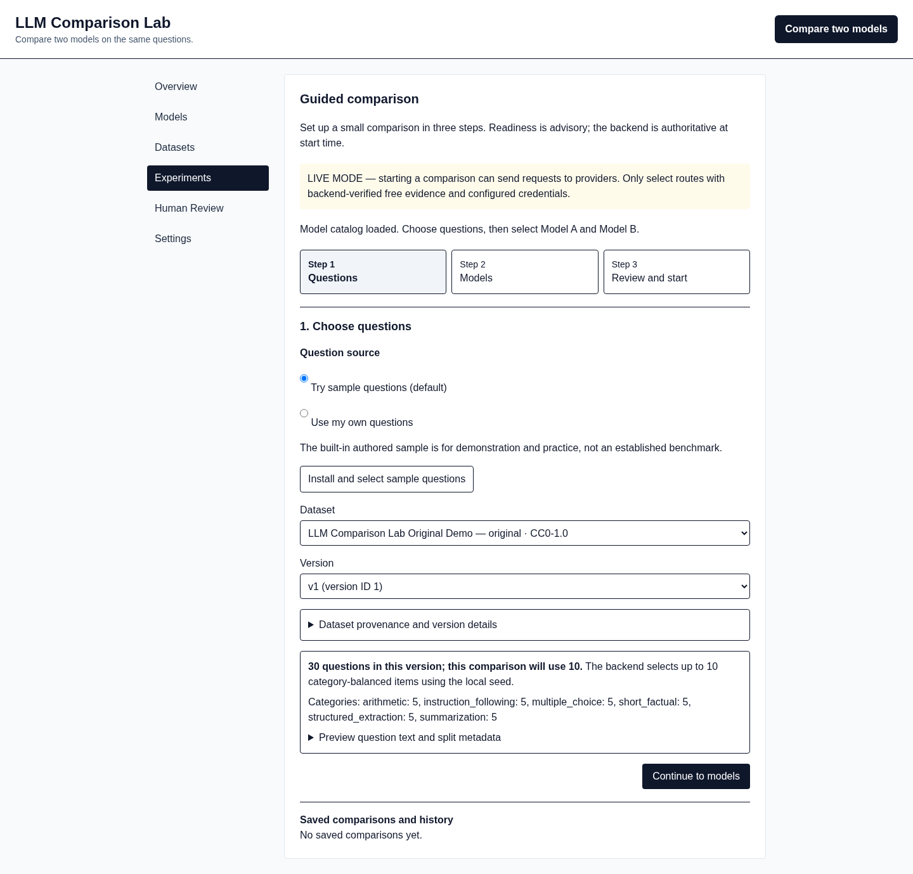

A clearer way to compare what each route returns.
Pick the same set for both routes. Here, 10 of 30 sample questions are selected.
Model A and Model B receive the same questions and shared instruction.
See the advisory budget before choosing whether to start.